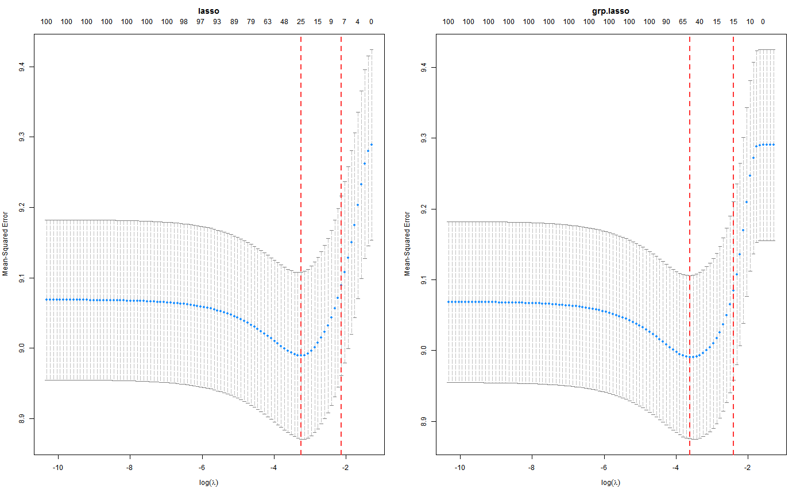

Cross validation for Orthogonalizing EM
cv.oem( x, y, penalty = c("elastic.net", "lasso", "ols", "mcp", "scad", "mcp.net", "scad.net", "grp.lasso", "grp.lasso.net", "grp.mcp", "grp.scad", "grp.mcp.net", "grp.scad.net", "sparse.grp.lasso"), weights = numeric(0), lambda = NULL, type.measure = c("mse", "deviance", "class", "auc", "mae"), nfolds = 10, foldid = NULL, grouped = TRUE, keep = FALSE, parallel = FALSE, ncores = -1, ... )
| x | input matrix of dimension n x p or |
|---|---|
| y | numeric response vector of length nobs. |
| penalty | Specification of penalty type in lowercase letters. Choices include |
| weights | observation weights. defaults to 1 for each observation (setting weight vector to length 0 will default all weights to 1) |
| lambda | A user supplied lambda sequence. By default, the program computes its own lambda sequence based on nlambda and lambda.min.ratio. Supplying a value of lambda overrides this. |
| type.measure | measure to evaluate for cross-validation. The default is |
| nfolds | number of folds for cross-validation. default is 10. 3 is smallest value allowed. |
| foldid | an optional vector of values between 1 and nfold specifying which fold each observation belongs to. |
| grouped | Like in glmnet, this is an experimental argument, with default |
| keep | If |
| parallel | If TRUE, use parallel foreach to fit each fold. Must register parallel before hand, such as doMC. |
| ncores | Number of cores to use. If |
| ... | other parameters to be passed to |
An object with S3 class "cv.oem"
set.seed(123) n.obs <- 1e4 n.vars <- 100 true.beta <- c(runif(15, -0.25, 0.25), rep(0, n.vars - 15)) x <- matrix(rnorm(n.obs * n.vars), n.obs, n.vars) y <- rnorm(n.obs, sd = 3) + x %*% true.beta fit <- cv.oem(x = x, y = y, penalty = c("lasso", "grp.lasso"), groups = rep(1:20, each = 5)) layout(matrix(1:2, ncol = 2)) plot(fit) plot(fit, which.model = 2)